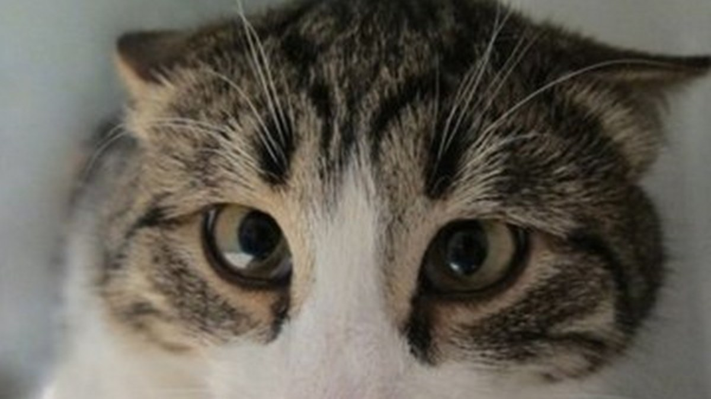

Chó vẫn hôi sau khi tắm: 7 nguyên nhân và cách xử lý
Trả lời nhanh: nếu chó vừa tắm xong nhưng vẫn có mùi, hãy kiểm tra trước tiên xem bộ lông đã khô hoàn toàn chưa và mùi phát ra từ đâu: lông/da, tai, miệng, bàn chân hay vùng hậu môn. Đừng chỉ tắm lại hoặc xịt nước hoa để che mùi. Mùi dai dẳng kèm ngứa, đỏ da, dịch tai, đau, rụng lông, liếm chân nhiều hoặc biểu hiện bất thường cần được bác sĩ thú y đánh giá.

Vì sao chó vẫn hôi sau khi tắm?
Tắm chỉ làm sạch bề mặt lông và da. Nếu nguồn mùi nằm ở vùng chưa được làm sạch đúng cách, bộ lông còn ẩm hoặc có vấn đề sức khỏe, mùi có thể quay lại rất nhanh. Thay vì tắm thêm một lần, nên xác định vị trí phát mùi trước.
1. Bộ lông chưa khô hoàn toàn
Lớp lông ngoài có thể khô nhưng phần sát da, sau tai, nách, bụng hoặc kẽ chân vẫn còn ẩm. Với chó lông dày hoặc xoăn, độ ẩm bị giữ lại lâu hơn. Sau tắm, thấm nước bằng khăn sạch rồi làm khô từng vùng; tránh nhiệt quá nóng và luôn kiểm tra nhiệt độ bằng tay.
2. Khăn, ổ nằm hoặc vòng cổ còn mùi
Chó vừa sạch nhưng quay lại nằm trên đệm ẩm, khăn cũ hoặc đeo vòng cổ chưa được vệ sinh thì mùi có thể bám trở lại. Hãy giặt và làm khô các vật dụng tiếp xúc trực tiếp với lông.
3. Tai là nguồn phát mùi
Mùi quanh đầu đôi khi không đến từ lông mà từ tai. Nếu tai có mùi rõ, nhiều ráy/dịch, đỏ, chó lắc đầu hoặc gãi tai nhiều, không nên tự ngoáy sâu. Vệ sinh phần nhìn thấy được chỉ phù hợp khi tai bình thường; xem thêm cách vệ sinh tai chó an toàn.
4. Miệng và răng
Mùi từ miệng có thể bị nhầm thành “mùi cơ thể”, nhất là khi chó vừa liếm lông. Nếu hơi thở thay đổi rõ, nướu bất thường, bỏ ăn hoặc có dấu hiệu đau miệng, nên hỏi bác sĩ thú y.
5. Bàn chân và kẽ ngón
Bàn chân tiếp xúc nền ẩm, đất và nước thường xuyên. Kiểm tra kẽ ngón xem có còn ẩm, bẩn, đỏ hoặc chó liếm chân liên tục hay không. Chỉ lau nhẹ và làm khô; tránh tự bôi thuốc khi chưa biết nguyên nhân.
6. Vùng hậu môn
Mùi tanh hoặc rất nồng tập trung ở phía sau có thể không liên quan đến dầu gội. Nếu chó kéo mông trên sàn, liếm vùng hậu môn nhiều, sưng, đau hoặc có dịch, cần được người có chuyên môn kiểm tra thay vì tự nặn tại nhà.
7. Da và lông có dấu hiệu bất thường
Mùi dai dẳng đi cùng ngứa, đỏ, vảy, nhờn, rụng lông thành mảng hoặc tổn thương da không nên được xử lý bằng cách tăng tần suất tắm. Tắm quá nhiều hoặc dùng sản phẩm không phù hợp còn có thể làm da khó chịu hơn.
Checklist 5 phút: tìm nguồn mùi trước khi xử lý
- Ngửi theo từng vùng: lưng, cổ, sau tai, nách, chân và vùng hậu.
- Sờ lớp lông sát da: xác định còn ẩm hay đã khô hoàn toàn.
- Kiểm tra tai bằng mắt: chỉ quan sát phần ngoài, không đưa vật sâu vào ống tai.
- Kiểm tra đồ dùng: khăn, ổ nằm, dây yếm và vòng cổ có sạch, khô không.
- Quan sát hành vi: gãi, liếm, lắc đầu, đau, lừ đừ hoặc bỏ ăn là thông tin quan trọng.
Cách xử lý an toàn khi chó còn mùi sau tắm
Nếu lông còn ẩm
Dùng khăn sạch thấm nước, tách nhẹ các lớp lông và làm khô từ gốc đến ngọn. Với chó sợ máy sấy, đừng ép bé chịu luồng gió mạnh; bài chó sợ máy sấy khi grooming có hướng dẫn chuẩn bị và giảm stress.
Nếu mùi bám lại từ môi trường
Thay khăn, giặt ổ nằm và vệ sinh các phụ kiện tiếp xúc với lông. Giữ khu vực nghỉ khô thoáng. Trong thời tiết ẩm hoặc sau mưa, tham khảo thêm cách chăm chó sau khi đi mưa.
Nếu cần làm sạch chuyên nghiệp
Khi lông dày, rối, khó làm khô tại nhà hoặc chủ không xác định được quy trình phù hợp, có thể tham khảo dịch vụ Spa thú cưng và Grooming chó mèo. Nếu cần biết chi phí trước, xem bảng giá Spa; mức áp dụng thực tế cần được xác nhận theo tình trạng và dịch vụ chọn.
Không dùng mùi thơm để che dấu dấu hiệu bất thường
Nước hoa hoặc sản phẩm tạo mùi không giải quyết nguồn gây mùi. Không dùng sản phẩm dành cho người lên da/lông chó nếu chưa xác định độ an toàn phù hợp cho thú cưng.
Khi nào mùi hôi sau tắm cần bác sĩ thú y?
Nên liên hệ bác sĩ thú y khi mùi dai dẳng hoặc tăng nhanh và đi cùng một hay nhiều dấu hiệu: da đỏ, sưng, đau, rỉ dịch, vết thương, rụng lông bất thường, ngứa dữ dội, tai có dịch/mùi rõ, lắc đầu liên tục, liếm chân quá mức, vùng hậu môn sưng đau, bỏ ăn, nôn, tiêu chảy, lừ đừ hoặc thay đổi hành vi đáng kể. Grooming hỗ trợ vệ sinh; không thay thế chẩn đoán và điều trị bệnh.
Câu hỏi thường gặp
Chó tắm xong vẫn hôi có nên tắm lại ngay không?
Không nên mặc định tắm lại. Hãy kiểm tra lông đã khô, khăn/ổ nằm, tai, miệng, bàn chân và vùng hậu trước. Nếu có dấu hiệu da hoặc sức khỏe bất thường, nên hỏi bác sĩ thú y.
Lông chưa khô có làm chó có mùi không?
Lông còn ẩm có thể khiến mùi khó chịu dễ nhận thấy hơn, đặc biệt ở lớp lông sát da và các vùng kín gió. Làm khô kỹ nhưng không dùng nhiệt quá nóng.
Có nên xịt nước hoa khi chó còn mùi?
Không nên dùng mùi thơm để che nguồn mùi chưa xác định. Một số sản phẩm có thể gây khó chịu cho da hoặc đường hô hấp nếu không phù hợp với thú cưng.
Spa có xử lý được mọi nguyên nhân gây mùi không?
Không. Spa/grooming phù hợp với vệ sinh và chăm sóc lông. Nếu nguồn mùi liên quan đến bệnh da, tai, răng miệng hoặc vấn đề sức khỏe khác, cần bác sĩ thú y đánh giá.
Cần kiểm tra quy trình tắm – sấy – chăm lông?
Lumi Pet có thể tư vấn phạm vi Spa/Grooming phù hợp trước khi đặt lịch. Nếu bé có dấu hiệu bệnh, hãy ưu tiên bác sĩ thú y.
Bài liên quan
Câu hỏi thường gặp
Giá tắm vệ sinh và cắt tỉa lông chó tại Lumi Pet Bình Thạnh 2026 bao nhiêu?
Theo bảng giá 2026 (8 mốc tới 25kg): Tắm vệ sinh chó từ 140.000đ – 550.000đ, Combo tắm cạo từ 200.000đ – 700.000đ và Combo tắm cắt tỉa từ 290.000đ – 850.000đ. Đã bao gồm cắt mài móng, nhổ lông tai, cạo bàn chân và vắt tuyến hôi 0đ.
Lumi Pet có dùng lồng sấy nhiệt không?
Không. Lumi Pet cam kết 100% thợ sấy tay bằng máy sấy ion gió ấm kết hợp chải tơi lông để đảm bảo an toàn và tránh sốc nhiệt cho bé.
Lumi Pet Bình Thạnh mở cửa đến mấy giờ?
Quầy dịch vụ Spa, Grooming và Pet Shop tại 27 Võ Trường Toản mở cửa từ 08:00 đến 21:00 tất cả các ngày trong tuần. Khu Pet Hotel có nhân viên trực trông giữ 24/7.